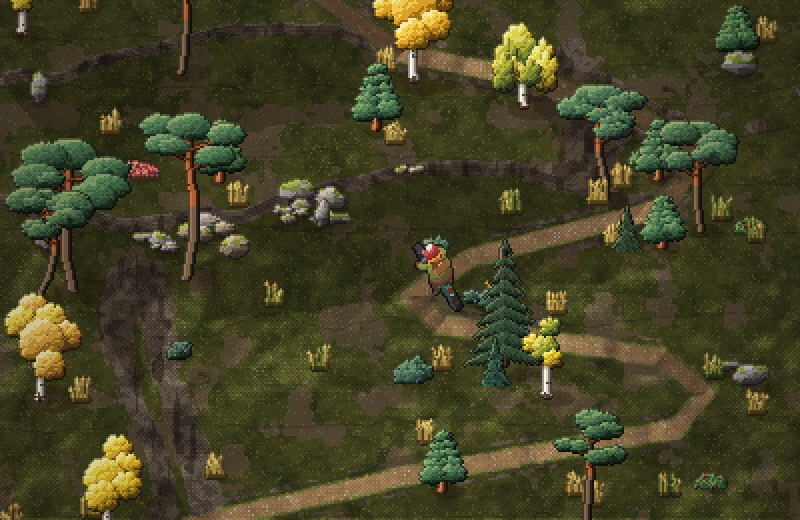
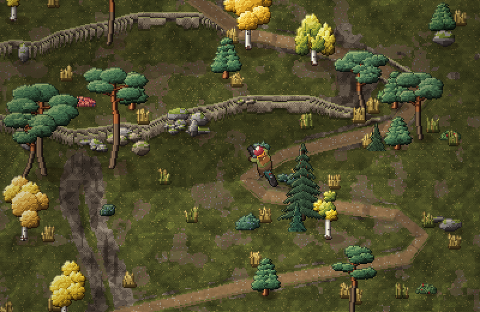
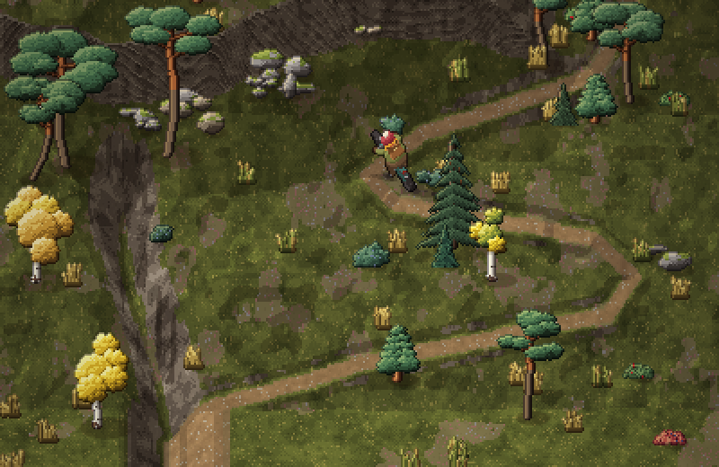
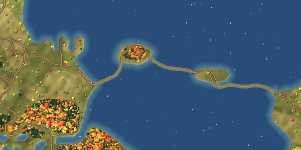
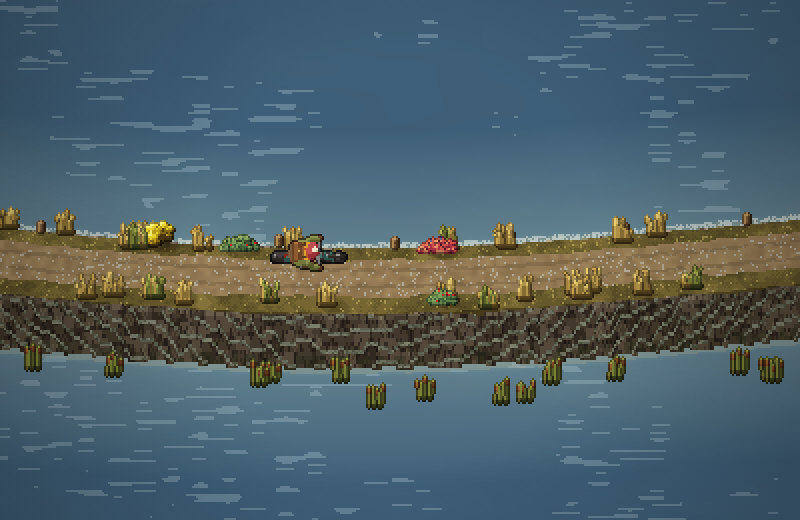
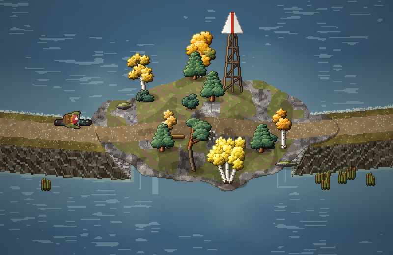
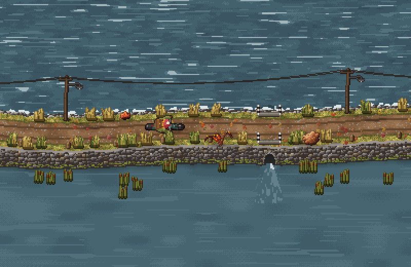
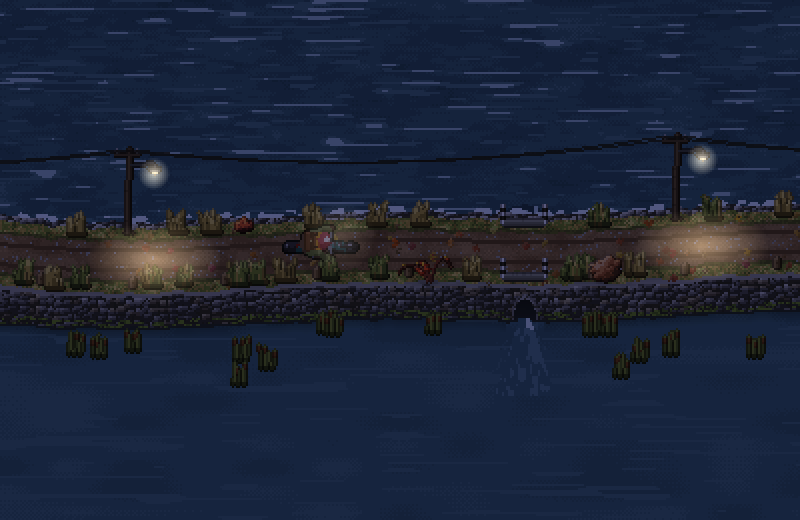
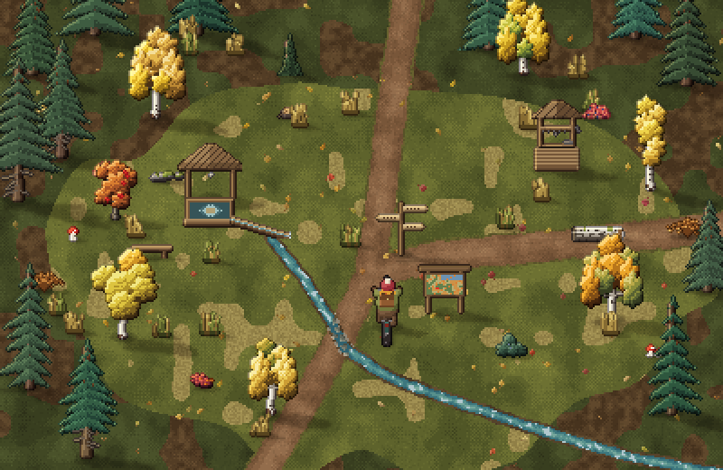
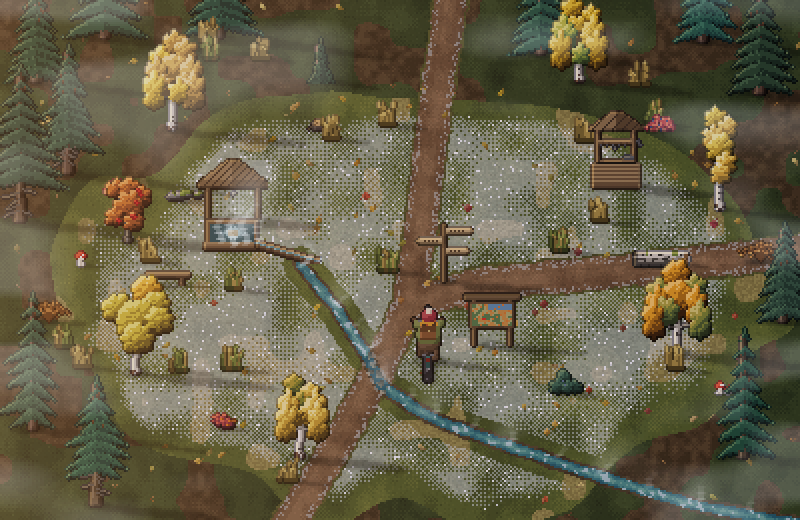

Карта из «Дальнобойщиков 2», перерисованная под нашу тропу. Города стали местами в лесу, дороги стали тропами. Лес, поляны, вода, болото и холмы прорисованы целиком: по задумке ехать можно будет и без тропы, джойстиком. Здесь всё для правок: карта, двенадцать мест с набросками и расстояния.
7,0 × 8,1 км вся карта55,9 км троп12 мест≈ 5 ч чтобы проехать всёклетка карты 4,7 м · в игре 1 px = 10 см
1 км
Маршрут→
Двенадцать мест
Наброски собраны из настоящих деревьев, кустов и камней игры. Постройки нарисованы заново в том же стиле. Расстояния — по тропам от Студёного ключа, время — на обычном темпе (11 км/ч).
Горы и холмы
В игре один экран — примерно 40 × 25 м. Склон в 20–30 % поднимается за экран всего на 2–3 м, и сверху его почти не видно. Поэтому гору нужно показывать приметами: светом, уступами, обрывами, осыпями. Ниже один и тот же кусок серпентина к вышке, нарисованный тремя способами.

А. Только свет и тень. Земля плоская, склоны темнее или светлее сильнее, чем в жизни. От уступов при низком солнце падают длинные тени. Тихо и дёшево, но склон читается слабо.

Б. Уступы. Там, где круто, под краем видна стенка камня. Остальное плоское. Читается сразу, как в классических пиксельных играх, но уступы похожи на сложенные стены, а пологий склон не виден.

В. Приподнятая земля. Чем выше место, тем выше оно на экране, как будто смотришь с юга чуть сверху. Обращённые к нам склоны раскрываются скальными стенками, овраг уходит вглубь, тропа врезана в склон. Объёмнее всего, но и работы больше всего.
РешеноСпособ В, а из А и Б берём тени от уступов и каменные стенки только на крутых местах.
Не только картинкойВ гору велосипедист едет медленно и тяжело дышит, под гору катится быстрее. Чем выше, тем меньше ели и больше сосны, вереска и камней. Под обрывами лежат осыпи.
На общей картеРельеф — тени и горизонтали через 15 м, как сейчас.
Дамба через залив
На старой карте дорога пересекает залив по воде через два острова. Двухкилометровый дощатый настил выглядел бы ненастоящим, поэтому здесь старая каменная насыпь, какие бывают на северных озёрах. Она прыгает с острова на остров, а вода между открытым и внутренним заливом проходит под ней через водопропуски. Вдоль насыпи стоят фонарные столбы. Всего около 2 км.

На общей карте: от Рыбацкой деревушки насыпь ведёт на сосновый островок, дальше на второй остров и на восточный мыс. Протоку насыпь пересекает над тройным водопропуском.

Насыпь. Поднята на 1,7 м над водой, наверху 3,6 м: накатанная колея, обочины с сухой травой, кусты ивы, старые столбики. С открытой стороны волны бьют о камни с пеной, с подветренной вода тихая и растёт тростник. К нам обращён каменный откос.

Сосновый островок. Скалы, мох, вереск, кривые сосны и берёзы. На макушке створный знак: высокая решётчатая вышка с белым щитом и красной полосой. У дороги скамья и кострище — привал на полпути.

Водопропуск и фонари. В каменном откосе арка водопропуска, из неё во внутренний залив бьёт струя посветлее. Наверху над трубой бетонные оголовки с полосатыми столбиками. Перил нет. По северной обочине стоят деревянные столбы с перекладиной под провода и фонарём на железном кронштейне.

Вечером. С сумерками фонари зажигаются сами, под каждым тёплое пятно света на колее. Между ними темно, светит только фара. Самое «жилое» место на пустой воде.
Как ощущаетсяОткрытое место: ветер сильнее, чем в лесу, слышны волны и чайки, листья уносит над водой. Ехать по насыпи ровно и быстро. У водопропусков слышно, как вода шумит в трубе. Вечером провода тихо гудят на ветру.
РешеноПерил нет. Моста нет: вода проходит через водопропуски. На протоке тройной (три трубы рядом, течение там сильнее всего), ещё 2–3 одиночных по длине насыпи. Фонарные столбы через 30–40 м по северной обочине, с проводами, горят с сумерек. Ширина прежняя: 3,6 м поверху, колея 2,2 м.
Разбор мест · 1 из 12
Студёный ключ — старт
Поляна в ельнике с берёзами по краю, около 40 × 25 м: ровно один экран. Здесь начинается каждая поездка. Всё, что нужно для начала пути, собрано на одном пятачке: вода, карта, указатель.

Днём. Слева родник под навесом. От него жёлоб спускает перелив в ручей, ручей бежит через поляну и пересекает тропу по камушкам. На развилке указатель, рядом стенд с картой, у которого стоит велосипедист. Справа колодец с воротом, у родника скамья.

Холодное утро. После ясной ночи поляна седая от инея, а у воды его нет. Вода в ключе круглый год +4…+6 °C, поэтому родник и ручей парят. Под елями инея нет, там лежит туман. Солнце низко с востока, тени длинные.
РодникНизкий бревенчатый сруб, в чаше «кипит» песок там, где бьёт ключ. Над ним навес-домик на двух столбиках, на гвозде ковш. Перелив уходит по колотому бревну-жёлобу и падает в ручей тонкой струйкой.
РучейУзкий и быстрый, с песчаным дном. Тропу пересекает по выложенным камушкам: та же механика, что уже есть в игре, велосипедист сбавляет ход и шуршит по гальке.
КолодецСруб с воротом и двускатной крышей, цепь на барабане, ведро на краю. Примета места, видная издалека.
Стенд с картойПод маленькой крышей карта троп с красной точкой «вы здесь». Подъехал — открывается карта и выбор маршрута. Отсюда игрок решает, куда ехать.
УказательТри доски-стрелки: к Рыбацкой деревушке и дамбе (1,7 км), к Кордону лесника (5,5 км), к Мельнице (6,8 км). Надписи в игре всплывают подсказкой, когда подъезжаешь.
ВокругЕльник с папоротником и черникой, берёзы и рябина по краю поляны, скамья у родника, грибы под елями, старое бревно у тропы.
Звук и жизньЖурчание струйки из жёлоба поверх ручья, синицы и клесты в ельнике, дятел. Утром пар и иней, вечером солнце сквозь берёзы, ночью тихо, в чаше родника отражаются звёзды.
Открытые вопросыНужен ли колодец рядом с родником или оставить что-то одно. Должен ли стенд открывать карту в игре или это только картинка. Куда показывает указатель.
Особые участки
Дамба через залив≈ 2 км над водойКаменная насыпь через два острова с водопропусками и фонарями, от Рыбацкой деревушки на восточный мыс.
Гать через болото≈ 2,3 кмМежду ключом и пасекой: бревенчатый настил, окна воды, клюквенные кочки, редкие сосенки.
Серпантин к вышкеподъём ≈ 150 мОт бывшего Горного вверх на плато. На подъёме велосипедист едет медленно, потом каменистая колея к карьеру.
Спираль Дубового холма≈ 3 виткаТропа обвивает холм, как на старой карте, и выходит к беседке.
Что на карте
Рельеф — тени с северо-запада и горизонтали через 15 м на открытых местах. Лес по зонам: ельник на северо-западе, боры у болота и на склонах, березняки у полей, дубрава вокруг холма, на востоке смешанный лес с осинниками.
Что поправить
Названия и смысл местМожно заменить любое место, добавить новое (например, родник у болота или охотничью вышку).
Где что стоитВключите «Старую карту поверх» и проверьте, совпадают ли тропы. Скажите, если какой-то тропы не хватает или она лишняя.
Вид построекИзбы, вышка, мельница, экскаватор — пока наброски. Скажите, что перерисовать.
МасштабСейчас 7 км поперёк. Можно растянуть или ужать.
Что дальше
2D-мир, север сверхуМир из квадратных кусков вместо полос, камера ходит в любую сторону.
Велосипедист на все 360°Спрайты на любой курс из той же 3D-модели.
Джойстик и езда без тропыПо лесу медленнее, по болоту вязко, в воду нельзя, в гору тяжело.
Выбор режима на старте«Бесконечная тропа» и «Карта (бета)».